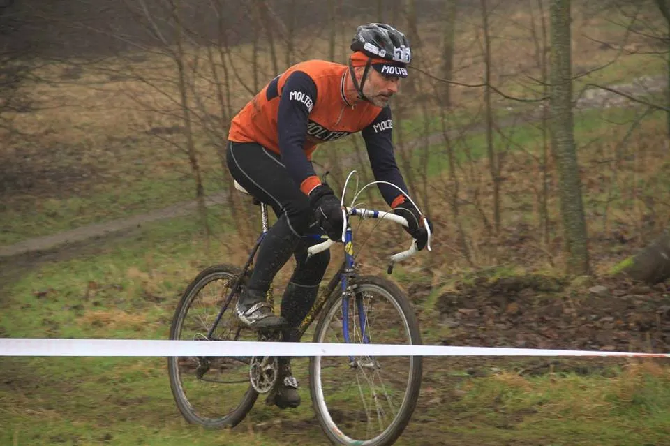
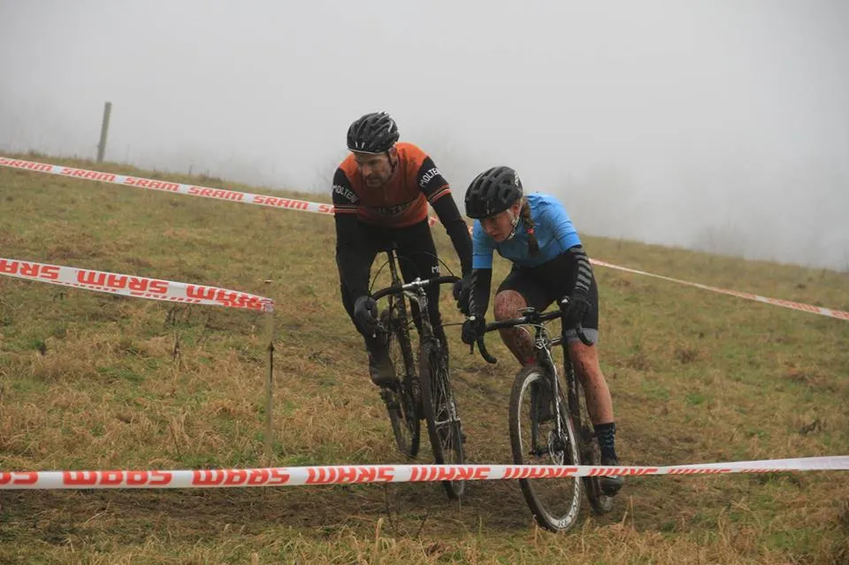

WeBike Crux Cup finalen

Squadra Molteni sendte i dag Grane “Wunderbein” Maaløe og Capitano Niels Bjørnsteen til WeBike Crux Cup finalen, der blev kørt et stenkast fra Grimhøjmoskéen ved Århus Vest.
“Wunderbein” støvede formen og de lidt tunge vinterben af – og viste gode takter. Specielt på de tekniske svære passager, viste Grane ekvilibristisk kørsel.

– Det var godt at komme ud og køre ræs igen, fortalte Grane, der det meste af vinteren har banket rust på holdets team-bus.
Capitano Bjørnsteen viste, udover den gode stil, også at formen er ved at være der. Han fik fightet sig til en 14. plads i det stjernebesatte felt.

– Tjaa, jeg kæmpede så godt jeg kunne. Men jeg blev sku overhalet af VM-rytteren Kristina Nørmark Thrane. Lige dér ved målområdet, hvor der var tilskuere, lyder det fra Bjørnsteen.
– Dét gjorde lidt ondt – men hun kører altså godt. Og jeg kunne ikke følge med hende.
Næste cross-opgave for “Wunderbein” og Capitano bliver det skæve, skøre og helt vidunderlige Grote Prijs vol. VIIII.